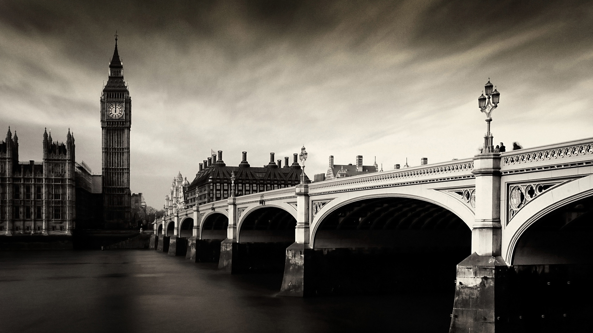

We are Group6. The main objective of this project is to access the quality of Edinburgh's Green Spaces as the Carbon sink. The main focus of this project was to qualitatively analyze the above ground carbon sequestration potential of the greenspaces.
Our team visited 6 Greenpaces to quantify above ground carbon storage in trees of randomly selected plots. Remote sensing techniques were also used to make a Carbon classification map for the whole city.
Our analysis was able to identify spatial variation of environmental deprivation (ED) in terms of Carbon value. We created an ED index, allowing general public to see how well their neighbourhood is performing 'Environmentally'. This index is extremely
useful for policy makers to focus efforts to conserve and protect vulnerable greenspaces and also encourage sustainability
Our Team members are Chandramauli, James Tomlinson, Mark Vallely, Mhairi Walker, Seamus O'Donnell, and Qiyao Xiao
